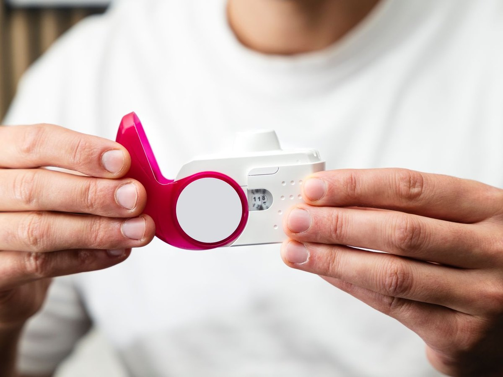

FeNO stands for Fractional Exhaled Nitric Oxide — a naturally occurring gas produced within the airways. When certain types of airway inflammation are present, particularly the inflammation seen in allergic asthma, nitric oxide levels tend to rise.
The FeNO test measures the amount of nitric oxide present in your exhaled breath. Higher levels may indicate ongoing airway inflammation, even when symptoms are mild or not immediately apparent.
At Healthy Chest & Sleep Clinic, Dr. Vishal Sharma utilises FeNO testing to help identify allergic airway inflammation, assess asthma control and guide personalised treatment decisions.
Book a consultation
Traditional lung function tests tell us how well the lungs are working. FeNO provides different information that allows more personalised and precise treatment planning.
Detecting airway inflammation directly
Identifying allergic airway involvement
Whether current therapy controls inflammation
Likelihood of responding to inhaled corticosteroids
Whether ongoing symptoms relate to inflammation
FeNO testing may be useful for a range of patients experiencing respiratory or allergy-related symptoms.
One of the most common uses of FeNO testing.
Especially when the cause remains unclear.
Patients with allergy-related airway symptoms.
To evaluate possible airway inflammation.
When traditional testing gives incomplete answers.
To assess ongoing inflammation despite treatment.
Supports diagnosis, particularly allergic asthma.
Tracking inflammation to assess disease control over time.
Evaluating airway involvement in allergy patients.
Identifying inflammation-related causes of cough.
Checking whether anti-inflammatory medications are working.
The procedure is simple, painless and takes only a few minutes — with no needles, blood tests or invasive procedures.
You will receive instructions regarding breathing technique before the test begins.
You take a deep breath and slowly exhale into the testing device.
The machine analyses the nitric oxide concentration in your breath.
Results are reviewed in the context of your symptoms, history and other investigations.
Many patients ask whether FeNO replaces a Pulmonary Function Test. The answer is no — both provide different information, and together they offer a more complete picture of respiratory health.
Measures how much air your lungs can hold.
Measures airflow and breathing performance.
Measures the level of inflammation in the airways.
Reflects allergic airway activity and response to treatment.
Elevated FeNO levels may suggest the following — though results must always be interpreted by a respiratory specialist within the context of your symptoms and overall clinical picture.
Inflammation linked to allergic triggers.
Asthma that may not be fully controlled.
A specific type of airway inflammation.
A possible need for treatment optimisation.
Many asthma patients focus only on symptoms. However, airway inflammation can remain active even when symptoms appear controlled.
FeNO helps identify hidden inflammation, the risk of future flare-ups, response to inhaled medications and the need for treatment adjustment — allowing more proactive asthma management.
Comprehensive evaluation of asthma, allergies, cough and airway disorders.
Access to modern pulmonary testing, including FeNO assessment.
Findings integrated into individualised care strategies.
Focused on improving long-term respiratory health and control.
Combining advanced diagnostics with expert clinical assessment.
Respiratory symptoms are not always visible on routine testing. The FeNO test provides valuable insight into airway inflammation, guiding more accurate diagnosis and personalised treatment. If you have asthma, allergies, chronic cough or unexplained breathing symptoms, consult Dr. Vishal Sharma.